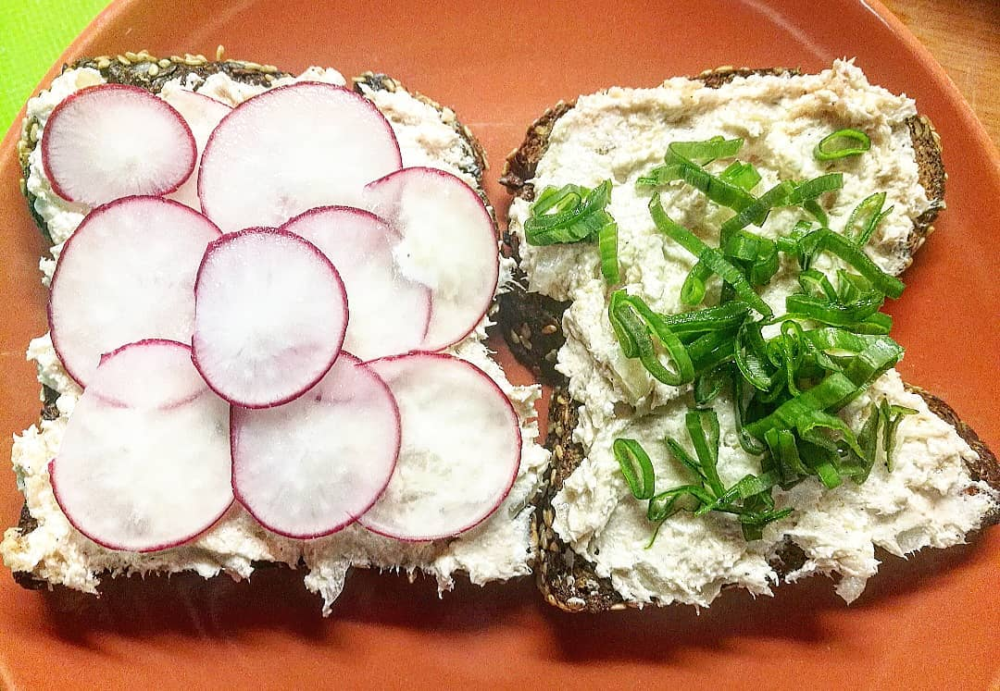

Tuniaková nátierka podľa @ivachudne_zdravamama — Normy Jedál
Večera - Tuniaková nátierka a opečený proteínový chlieb
(tuniak vo vlastnej šťave, nízkotučný tvaroh, trochu horčice, soľ, čierne korenie, cibuľa)
Raňajky - granola a biely jogurt
Obed - špenátová polievka, 2ks knäckebrot
Olovrant - kuracie kari
#chudnutiezdravastrava #chudneme #hubnuti #hubneme #weightlossjourney #weightlossdaily #weightloss #vecera #pomazanka #natierka #tuniakovanatierka #proteinovychlieb